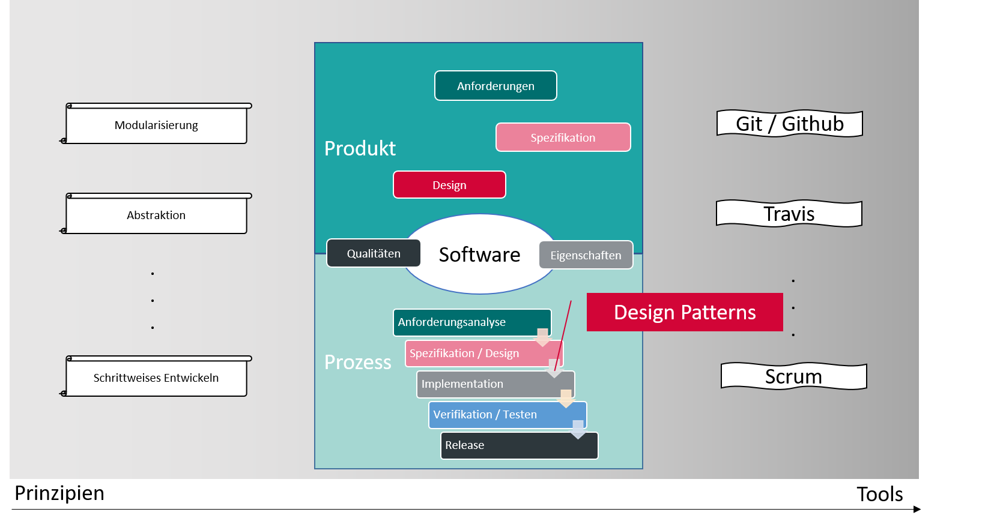
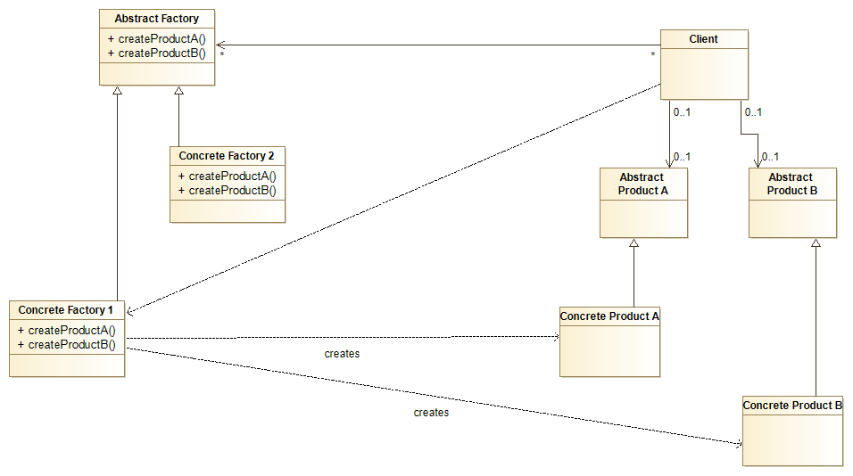
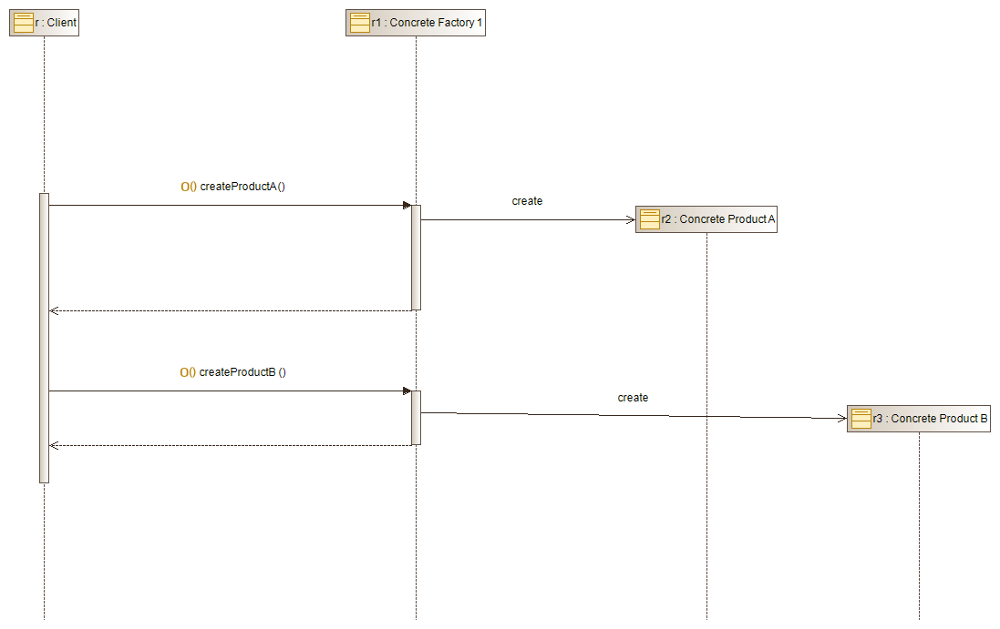

Marcel Lüthi Departement Mathematik und Informatik
Einordnung

"Abstraction should follow experience, not precede it."
Michael Atiyah
Design Patterns
Design Pattern: Bewährte Lösungsansätze für wiederkehrende Designprobleme.
Konkrete Probleme lösen
Wiederkehrende Ansätze identifizieren
Abstrahieren
Benennen
Resultat: Katalogisiertes Expertenwissen
Vorteile von Design Patterns
Ein Design Pattern "standardisiert" den Lösungsansatz
Bauteil für den Designer
Vereinfacht Kommunikation
Vereinfacht Lesen/Verstehen von Code
Klassifikation
Erzeugungsmuster (Creational Patterns)
Strategien um Objekte zu erzeugen
Strukturmuster (Structural Patterns)
Strategien um Beziehungen zwischen Klassen zu realisieren
Verhaltensmuster (Behavioral Patterns)
Strategien um Kommunikation zwischen Objekten zu realisieren
Gang of Four Patterns
Erzeugungsmuster
Abstrakte Fabrik
Erbauer
Fabrikmethode
Prototyp
Singleton
Strukturmuster
Adapter
Brücke
Dekorierer
Fassade
Fliegengewicht
Kompositum
Proxy
Verhaltensmuster
Befehl
Beobachter (Observer)
Besucher
Interpreter
Iterator
Memento
Schablonenmethode
Strategie
Vermittler
Zustand
Beispiel Designproblem
Ein System soll unabhängig davon sein wie seine "Produkte" (Objekte) erzeugt werden soll.
Beispiel: GUI Bibliothek soll Widget Klassen mit verschiedenen Look and Feels unterstützen
Kreieren von Objekten einer Klasse ohne diese explizit angeben zu müssen.
Abstract Factory
Verschiedene Factory Implementation erlauben es verschiedene Subtypen zu kreieren.
Abstract Factory

Abstract Factory

Abstract Factory
Beispiel, adaptiert aus Ganttproject
public interface ICalendarFactory {
Calendar newCalendar();
}
class DefaultCalendarFactory implements ICalendarFactory {
@Override public Calendar newCalendar() {
return new GanttCalendar(...);
}
}
public Date adjustLeft(ICalendarFactory factory, Date d) {
Calendar c = factory.newCalendar();
while (c.get(Calendar.DAY_OF_WEEK) != c.getFirstDayOfWeek()) {
...
}
}
Design Patterns im Kontext
Verschiedene Programmierparadigmen ⇒ Verschiedene Design Patterns
Paradigma macht Pattern unnötig
Paradigma benötigt neue Lösungen für wiederkehrende Probleme
Beispiel: Zustandsmanagement in OO/Funktionalen Sprachen
Pattern wird von neuen Sprachen als Sprachkonstrukt implementiert
Beispiel: Singleton als Sprachkonstrukt
Design Patterns im Kontext
Patterns sind nicht fundamental sondern verändern sich mit der Zeit.
Aber:
Design Patterns helfen Programmierer, Designer und Software Architekten miteinander zu kommunizieren.